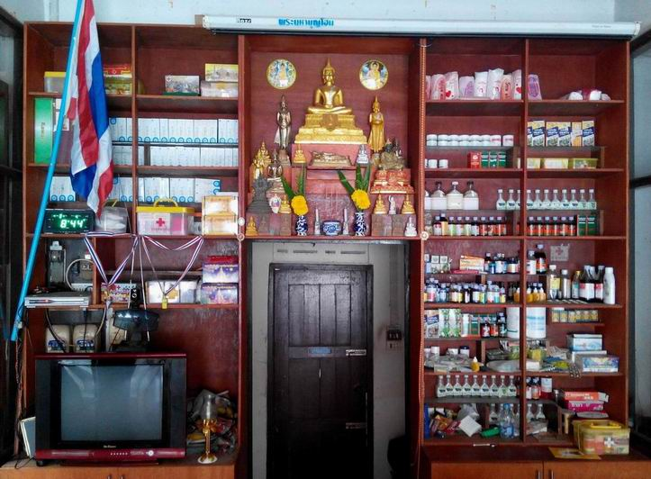
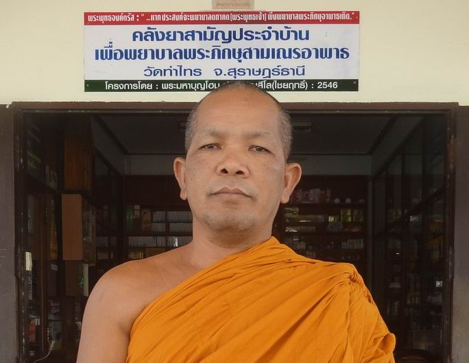
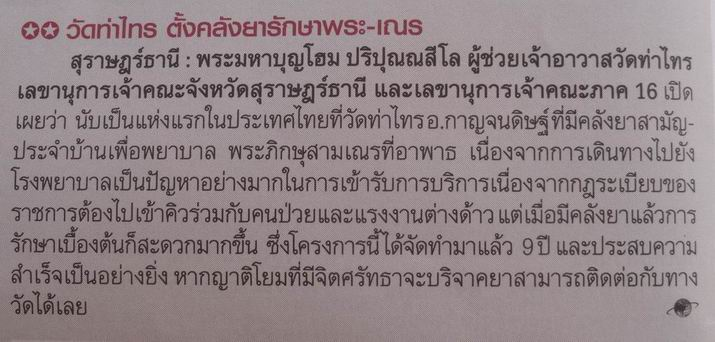

|
พระพุทธเจ้าตรัสไว้ในพระไตรปิฎก
เล่มที่ 5 (วินัยปิฎก) ข้อ 226 ข้อความตอนหนึ่งว่า "...โย
ภิกขเว มํ อุปฏฐเหยย โส คิลานํ อุปฏฐเหยย ดูก่อนภิกษุทั้งหลาย
ผู้ใดปราถนาจะอุปปัฏฐาก(พยาบาล)เราตถาคต ผู้ที่มีความประสงค์จะอุปัฏฐากเราตถาคต
(พระพุทธเจ้า) ผู้นั้นพึงอุปัฏฐากภิกษุอาพาธเถิด..."
พระภิกษุสามเณรไม่มีญาติพี่น้องคนรู้จักสักคนตามมาด้วย
แม้จะมีเพื่อน แต่เพื่อนก็เป็นพระเหมือนกันหรืออาจเจ็บป่วยเช่นเดียวกัน
ด้วยโรคหวัดที่ติดง่ายมากในกลุ่มคนหมู่มาก การพยาบาลรักษาพระอาพาธและคนไข้
ถือว่าเป็นบุญ..บุญเป็นชื่อของความสุข ทำบุญแล้วจิตใจก็สุขเอิบอิ่ม
เป็นความสุขที่ประณีตลึกซึ้ง มีผลระยะยาว ไม่เหมือนอาหารที่รับประทาน
หรือสิ่งบำรุงร่างกาย ผ่านไปก็หายหมด ความสุขก็สิ้นไป นึกใหม่กลายเป็นทุกข์เพราะมันไม่มี
มันหมดไป ต้องหาใหม่ ..แต่บุญเป็นสุขที่เข้าไปฝังลึกในจิตใจ เป็นความเต็มอิ่ม
ทำให้เกิดปีติในบุญ เมื่อเราทำแล้วมันก็ไม่หมด นึกถึงเมื่อไรใจก็เอิบอิ่มผ่องใสเรื่อยไป
เป็นความสุขที่ยั่งยืน

ดังนั้น
จึงได้มีโครงการคลังยาสามัญประจำบ้านเพื่อพยาบาลพระภิกษุสามเณรอาพาธในวัดท่าไทร
(ฟรี) ซึ่งพระภิกษุสามเณรหากอาพาธ(ไม่สบาย)ขึ้นมา ก็จะสามารถมาพิจารณาเลือกหยิบเอายาและเวชภัณฑ์ตามที่ต้องการไปใช้เองโดยสะดวก
ตามอุดมการณ์และแนวคิดของพระมหาบุญโฮม ปริปุณฺณสีโล (ไชยฤทธิ์)
ผู้ช่วยเจ้าอาวาสวัดท่าไทร โดยใช้เงินส่วนตัวซื้อยามาไว้ถวายพระภิกษุสามเณร
และส่วนหนึ่งลูกศิษย์ที่รู้ข่าวก็ซื้อนำมาถวาย ซึ่งดำเนินการตั้งแต่ปี
2546 เป็นต้นมา ซึ่งหลังจากที่ทำมาได้ประมาณ 9 ปี ลูกศิษย์ที่เป็นนักข่าวได้เอาไปลงหนังสือพิมพ์ซึ่งก็ลืมแล้วว่า
นสพ.อะไร (ที่พลาดก็เฉพาะตำแหน่งของแอดมินผิดเท่านั้นเอง โปรดอย่าได้ถือสาระกับพลความครับ)

พระมหาบุญโฮม
ปริปุณฺณสีโล (ไชยฤทธิ์) ถ่ายคู่กับป้ายหน้ากุฏิ ซึ่งเป็นที่ตั้งคลังยาสามัญประจำบ้านเพื่อพยาบาลพระภิกษุสามเณรอาพาธ
(ระยะเริ่มแรก ไม่มีการติดป้าย มีการปล่อยข่าวจากผู้ไม่หวังดีสาระพัด
จึงได้ทำป้ายขึ้นมาติดไว้เพื่อความชัดเจน)
คลังยาสามัญประจำบ้านฯ
ดังกล่าว เปิดให้พระภิกษุสามเณรที่อาพาธตลอดเวลาที่พระมหาบุญโฮม
ปริปุณฺณสีโล(ไชยฤทธิ์) อยู่กุฏิ/ในวัด ประสงค์จะขยายผลในเวลาที่ไม่อยู่ด้วย
แต่ก็ยังขาดความพร้อมของบุคลากร" เพื่อเป็นบุญเภสัชทานซึ่งจะส่งผลให้สุขภาพดี
มีสุข ไม่มีโรคภัยไข้เจ็บทุกภพทุกชาติ ซึ่งหากพระรูปใด วัดไหนประสงค์จะเอาแนวคิดไปขยายผลจัดทำขึ้นมาในวัดของตัวเอง
ก็ไม่สงวนลิขสิทธิ์ ขอเชิญจัดไปได้เลย ที่สำคัญท่านที่มีความรู้ด้านนี้
ตบเท้าเดินเข้าไปรับทำหน้าที่ในวัดใกล้บ้านของเราได้เลยครับ
ส่วนหนึ่งของตู้ยาสามัญได้ใช้ประดิษฐานพระพุทธรูปที่กุฏิพระมหาบุญโฮม
ปริปุณฺณสีโล ออกแบบและทำเอง เหตุที่ประดิษฐานพระพุทธรูปพร้อมเครื่องบูชาด้วย
เพราะเราชาวพุทธถือว่า พระพุทธเจ้า พระธรรม และพระสงฆ์เป็นโอสถคือยารักษาโรคขนานที่ประเสริฐที่สุดกว่ายารักษาโรคชนิดอื่น
(พุทธะระตะนัง ธัมมะระตะนัง สังฆะระตะนัง โอสะถัง อุตตะมัง วะรัง)
เพราะรักษาได้ทั้งโรคทางกาย โรคทางใจ และโรคที่เรื้อรังที่สุดก็คือทุกข์ในสังสารวัฏฏ์
เราชาวพุทธอาศัยพระพุทธเจ้า พระธรรม พระสงฆ์เท่านั้น จึงจะรักษาโรคเรื้อรังให้หายขาดได้อย่างสิ้นเชิง
(บรรลุพระอรหันต์ ดับกิเลส ดับทุกข์ได้อย่างสิ้นเชิง) จึงนำข้อมูลที่ดีเพื่อเป็นการกระตุ้นแนวคิด
และนำบุญกุศลมาฝากทุกท่านครับ

หลังจากที่ทำมาได้ประมาณ
9 ปี ลูกศิษย์ที่เป็นนักข่าวได้เอาไปลงหนังสือพิมพ์ซึ่งก็ลืมแล้วว่า
นสพ.อะไร (ที่พลาดก็เฉพาะตำแหน่งของแอดมินผิดเท่านั้นเอง โปรดอย่าได้ถือสาระกับพลความครับ)
ข้อมูลเพิ่มเติม.-
1.ที่คลังยาฯ
ยังมีไม่เพียงพอแก่การใช้งาน ซึ่งจะต้องจัดหาและจัดซื้อเพิ่มเติมในโอกาสหากท่านที่มีจิตศรัทธาประสงค์จะสนับสนุนงานงานคณะสงฆ์ส่วนนี้
หรือประสงค์จะร่วมทำบุญเภสัชทาน ก็สามารถส่งยารักษาโรคไดที่
"พระมหาบุญโฮม ปริปุณฺณสีโล วัดท่าไทร ต.ท่าทองใหม่ อ.กาญจนดิษฐ์
จ.สุราษฎร์ธานี 84290" หรือโอนเงินเข้าบัญชี ธนาคารกรุงไทย
สาขาสุราษฎร์ธานี บัญชีออมทรัพย์ เลขที่ ๘๐๗-๐-๑๐๒๑๔-๔ ชือบัญชี
พระมหาบุญโฮม ปริปุณณสีโล เสร็จแล้ว โปรดแจ้งการบริจาคพร้อมหลักฐานการโอนเงินไปที่
E-mail : watthasai@gmail.com ก็จะเป็นบุญกุศลและเป็นที่น่าอนุโมทนาอย่างยิ่ง
2.แอดมินทำหน้าที่สื่อฯ
คนหนึ่ง ด้วยสื่อชนิดหนึ่ง ซึ่งก็คือสื่ออินเตอร์เนต เป็นสื่อภาคประชาชน
ได้สื่อให้คนทั่วไปได้รู้กันมาตั้งนานแล้วว่าวัดต่าง ๆ มีตู้ยาและคลังยาสามัญประจำบ้านเพื่อรักษาพระภิกษุสามเณรเป็นการเบื้องต้นอยู่แล้ว
และที่นำมาลงไว้ในเฟชก็เพื่ออนุโมทนาผู้ทำความดี ให้เป็นตัวอย่างที่ดีแก่สังคม
เท่านั้น มิใช่ลงอินเตอร์เนตเพื่อต้องการให้สื่อมวลชนรับรู้หรือให้ความสนใจ
และไม่ต้องการชื่อเสียงเลยแม้แต่น้อย
พระมหาบุญโฮม
ปริปุณฺณสีโล (ไชยฤทธิ์)
ป.ธ.๕,น.ธ.เอก,ศษ.บ., MPA (นิด้า)
ผู้ช่วยเจ้าอาวาสวัดท่าไทร

|